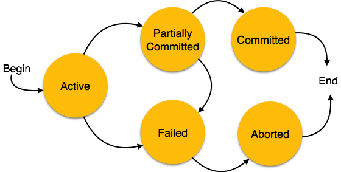
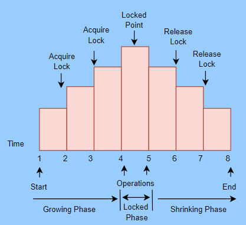
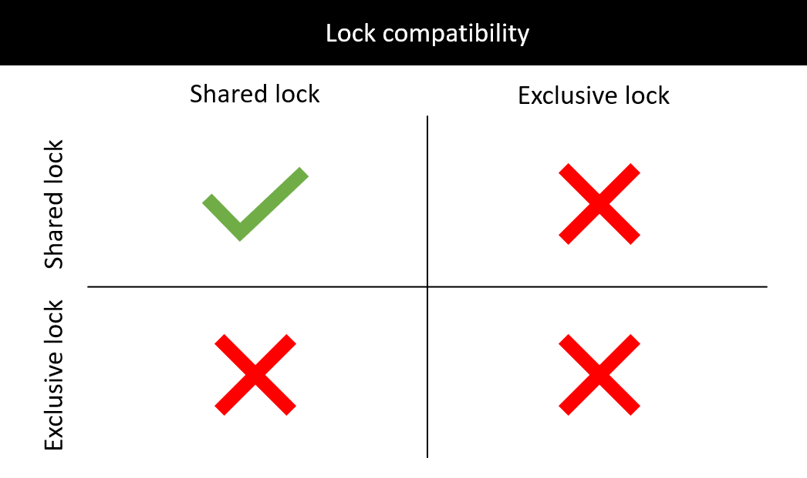

Concurrent execution, isolation levels, deadlock, write-ahead logging, and crash recovery
Learning Objectives
Define a transaction and state the four ACID properties with concrete examples
Describe the anomalies that arise from concurrency: dirty read, non-repeatable read, phantom read
Explain Two-Phase Locking (2PL) and prove it guarantees serializability
Define deadlock and explain detection and prevention strategies
Explain Write-Ahead Logging (WAL) and the ARIES recovery algorithm's three phases

Figure 41.1 — Multiple transactions interleaving their operations; the DBMS must ensure the result is equivalent to some serial execution
1. What Is a Transaction?
A transaction is a sequence of database operations (reads and writes) that must be executed as a single logical unit. Either all operations complete and their effects are permanently recorded, or none of them take effect. Transactions allow multiple users to safely share a database concurrently.
Example — Bank Transfer:
BEGIN TRANSACTION;
UPDATE accounts SET balance = balance - 500 WHERE account_id = 'A';
UPDATE accounts SET balance = balance + 500 WHERE account_id = 'B';
COMMIT;
Both updates must succeed together, or neither must happen.
2. ACID Properties
Atomicity
A transaction is all-or-nothing. If it aborts (due to error or explicit ROLLBACK), all its changes are undone. If it commits, all changes are permanent. Enforced by the DBMS recovery system using undo logs.
Consistency
A transaction takes the database from one consistent state to another. Consistency constraints (foreign keys, CHECK constraints, triggers) are satisfied before commit. The application programmer is responsible for writing transactions that preserve application-level consistency.
Isolation
Concurrent transactions appear to execute serially. Each transaction sees only committed data from other transactions (at the default level). Enforced by the concurrency control manager using locks or MVCC.
Durability
Once a transaction commits, its changes survive system failures (crashes, power loss). Enforced by writing commit records to persistent storage (WAL) before acknowledging the commit to the client.
3. Concurrency Anomalies
Without proper isolation, concurrent transactions can produce incorrect results. The standard anomalies are:
Anomaly
Description
Example
Dirty Read
T2 reads a value written by T1 before T1 commits; if T1 aborts, T2 has used a non-existent value
T1 transfers $500; T2 reads the new balance; T1 aborts; T2's view is wrong
Non-Repeatable Read
T2 reads the same row twice and gets different values because T1 committed an update between the reads
T2 re-executes a query and sees new rows (phantoms) inserted by T1 after T2's first execution
T2 counts students enrolled; T1 enrolls 3 new students; T2 counts again — different result
3.1 SQL Isolation Levels
Level
Dirty Read
Non-Rep Read
Phantom Read
READ UNCOMMITTED
Possible
Possible
Possible
READ COMMITTED (default in most RDBMS)
Prevented
Possible
Possible
REPEATABLE READ
Prevented
Prevented
Possible
SERIALIZABLE
Prevented
Prevented
Prevented
4. Two-Phase Locking (2PL)

Figure 41.2 — In 2PL, the growing phase acquires locks; the shrinking phase releases them. The lock point is the peak.
Two-Phase Locking guarantees serializability by enforcing a simple rule on when transactions may acquire and release locks:
2PL Protocol
Growing phase: a transaction may acquire (but not release) locks. Lock point: the moment the transaction holds its maximum set of locks. Shrinking phase: a transaction may release (but not acquire) locks.
Lock types: S-lock (shared, for reads) and X-lock (exclusive, for writes). S-locks are compatible with other S-locks; X-locks are not compatible with any other lock.
Lock compatibility matrix:
S-lock held X-lock held No lock
S-request: ✓ ✗ ✓
X-request: ✗ ✗ ✓
4.1 Strict 2PL
Standard 2PL allows early release of locks during the shrinking phase, which can lead to cascading aborts. Strict 2PL holds all locks until the transaction commits or aborts. This is what most production systems implement because it prevents cascading aborts and simplifies recovery.

Figure 41.3 — Lock acquisition and release timeline; holding X-locks until commit ensures no other transaction can read dirty data
4.2 Deadlock
A deadlock occurs when two or more transactions are each waiting for a lock held by the other:
T1: holds X-lock on A, requests X-lock on B → waiting
T2: holds X-lock on B, requests X-lock on A → waiting
↑ Deadlock! Neither can proceed.
Two resolution strategies:
Detection: periodically check for cycles in the waits-for graph; abort one transaction (the "victim") to break the cycle. Most production systems (SQL Server, PostgreSQL) use this.
Prevention: timestamp-based schemes — e.g., Wait-Die (older transactions wait; younger ones die and restart) or Wound-Wait (older transactions force younger ones to abort).
5. Multi-Version Concurrency Control (MVCC)
Many modern systems (PostgreSQL, MySQL InnoDB, Oracle) use MVCC instead of pure locking. Each write creates a new version of the data; readers see the snapshot as of their transaction start time. Readers never block writers; writers never block readers.
PostgreSQL MVCC — each tuple has:
xmin: transaction ID that created this version
xmax: transaction ID that deleted/updated this version (0 if current)
Reader T2 (started at txn_id=500) sees:
tuples where xmin ≤ 500 AND (xmax = 0 OR xmax > 500) → committed before T2 started
6. Write-Ahead Logging (WAL) and Recovery
The WAL rule: before a dirty page is written to disk, its log record must be written to the log first. This ensures that if a crash occurs after a page write but before commit, the DBMS can undo the change using the log.
6.1 Log Record Structure
Each log record contains:
LSN: Log Sequence Number (monotonically increasing)
TxnID: which transaction created this record
Type: UPDATE / COMMIT / ABORT / COMPENSATION (CLR)
PageID, Offset: what was changed
Before-image: old value (for undo)
After-image: new value (for redo)
prevLSN: LSN of previous record by this transaction (transaction log chain)
6.2 The ARIES Recovery Algorithm
ARIES (Algorithm for Recovery and Isolation Exploiting Semantics) is used by IBM DB2, SQL Server, PostgreSQL, and MySQL. It consists of three phases after a crash:
Analysis: read the log from the last checkpoint forward; build the dirty page table (pages modified but not yet written to disk) and the active transaction table (transactions that were in progress at crash time)
Redo: replay all log records from the RedoLSN (earliest dirty page) forward; restore the database to its exact state at the time of crash (including uncommitted changes)
Undo: undo all changes made by uncommitted transactions (those in the active table), writing Compensation Log Records (CLRs) as undo proceeds, so a crash during recovery can be re-recovered
Timeline:
──────────────────────────────────────── crash
[checkpoint] [T3 aborts?]
T1: ────BEGIN───COMMIT
T2: ──────────────BEGIN─────────────── (uncommitted at crash → undo)
T3: ────────BEGIN─────COMMIT
After restart:
Analysis: T2 is active (uncommitted), all pages it modified are dirty
Redo: replay T1, T2, T3 changes (restore exact pre-crash state)
Undo: undo T2's changes (write CLRs), T2 effectively rolled back
7. Summary
A transaction is atomic, consistent, isolated, and durable (ACID)